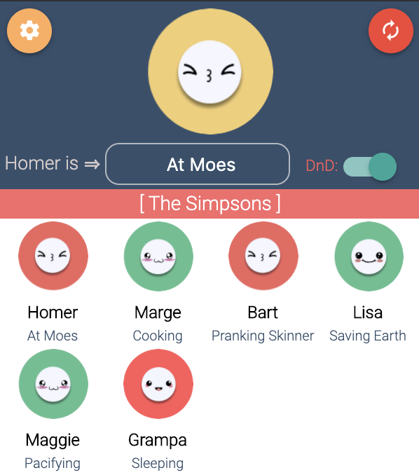

Launching Supp — Mindful Status Management in a WFH World
13 Jul 2020 · 2 min read
Today marks the day of the launch of Supp! 🥳
What is it?
Supp is a simple browser extension for mindful status management. You can form a group with your coworkers or friends, and Supp gives you an instant glance at what they are doing & who’s free or busy.
The idea behind it
It’s designed mainly for the current remote/WFH-heavy workspace, where working peacefully has, startlingly, become quite challenging. There are too many sync-ups just to know what everyone is doing in the team — along with frequent Slack/Hangouts messages like “Are you available for a call?”, “What are you doing?”. Not to mention some people who don’t even bother to ask your availability before shooting out their pings.
I was unable to find disturbance-free time to focus on my own work and wished there was an automated way to know what everyone was doing & whether someone is free to be bothered before pinging them.

Been there, felt that? Supp is for you. Install now!
← All blogs